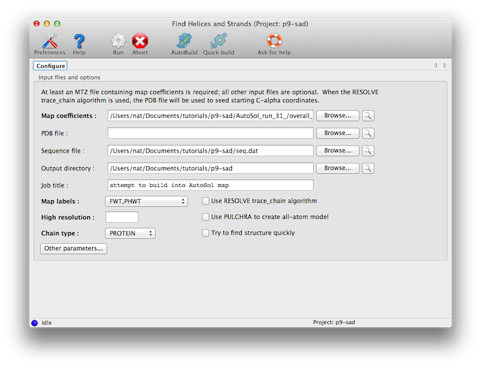
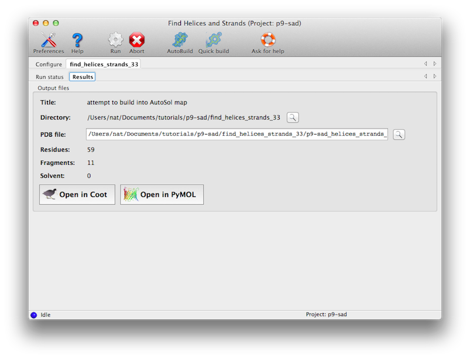
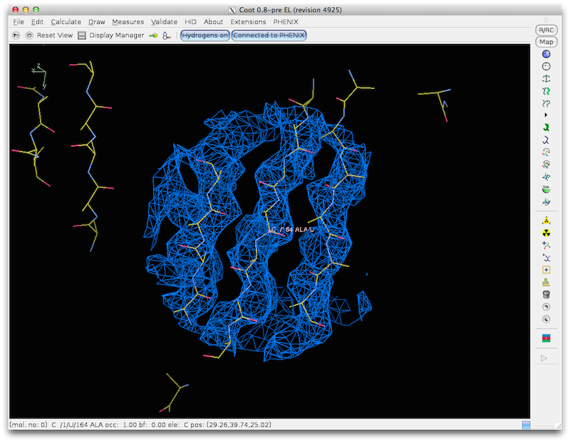

Rapid fitting of secondary structure to a map with find_helices_strands
- find_helices_strands: Tom Terwilliger
- PULCHRA: Piotr Rotkiewicz
find_helices_strands is a command line tool for finding helices and strands in
a map and building an model of the parts of a structure that have regular
secondary structure. It can be used for protein, RNA, and DNA. An option is to
use a rapid chain-tracing algorithm to build CA of proteins, followed by
reconstruction of a full model.
The program is available in the Phenix GUI under "Model building". The only
required input is an electron density map, such as the output of density
modification. A sequence file is optional.

The default behavior is to search for protein helices and strands, but you
may instead look for nucleic acid helices, or use the trace_chain method
(describe below) to find C-alpha positions independently of secondary structure
motifs. Using the default options without a sequence, the model will be a
poly-alanine backbone; with the trace_chain method it will be a C-alpha trace,
but you may optionally have PULCHRA (Rotkiewicz & Skolnick 2008) complete
the backbone.
The program usually only requires a few minutes at most to run. Output will
be to a new directory, with a single PDB file containing a partial model.


How find_helices_strands finds helices and strands in maps:
find_helices_strands first identifies helical segments as rods of density at
5-8 A. Then it identifies helices at higher resolution keeping the overall
locations of the helices fixed. Then it identifies the directions and CA
positions of helices by noting the helical pattern of high-density points
offset slightly along the helix axis from the main helical density (as used
in "O" to identify helix direction). Finally model helices are fit to the
density using the positions and orientations identified in the earlier steps.
A similar procedure is used to identify strands. Then the helices and strands
are combined into a single model.
How find_helices_strands finds RNA and DNA helices in maps:
find_helices_strands finds RNA and DNA helices differently than it finds
helices in proteins. It uses a convolution search to find places in the
asymmetric unit where an A-form RNA or B-form DNA helix can be placed. These
are assembled into contiguous helical segments if possible. The resolution of
this search is 4.5 A if you have resolution beyond 4.5 A, and the resolution
of your data otherwise.
How trace_chain finds CA positions in maps:
The RESOLVE trace_chain algorithm places dummy atoms down the middle of all the
tubes of density in a map, then it attempts to find sets of these atoms that
may be CA atoms, where the atoms are spaced by 3.8 A and where there is strong
density between each pair. This yields segments represented by CA atoms. Next
PULCHRA (Rotkiewicz & Skolnick 2008) can optionally be used to reconstruct a
full main-chain model. Finally RESOLVE is used to assemble all the resulting
fragments into a model.
If you run phenix.autobuild at low resolution (3.5 A or lower) then your model
may have strands built instead of helices. You can use find_helices_strands to
help bootstrap autobuild model-building by providing the helical model from
find_helices_strands to phenix.autobuild. Just run phenix.find_helices_strands
with your best map map_coeffs.mtz. Then take the helical model pass it to
phenix.autobuild with the keyword (in addition to your usual keywords for
autobuild):
consider_main_chain_list=map_coeffs.mtz_helices.pdb
Then the AutoBuild wizard will treat your helical model just like one of the models that it builds, and merge it into the model as it is being assembled.
From the command-line you can type:
phenix.find_helices_strands map_coeffs.mtz quick=True
If you want a more thorough run, then skip the "quick=True" flag. If you want
(or need) to specify the column names from your mtz file, you will need to tell
find_helices_strands what FP and PHIB are, in this format:
phenix.find_helices_strands map_coeffs.mtz \
labin="LABIN FP=2FOFCWT PHIB=PH2FOFCWT"
If you want to specify a sequence file, then in the last step
find_helices_strands will try to align your sequence with the map and model:
phenix.find_helices_strands map_coeffs.mtz seq_file=seq.dat
If you want to use the trace_chain algorithm, then specify:
phenix.find_helices_strands map_coeffs.mtz seq_file=seq.dat trace_chain=True
Here is an example using data from the PHENIX examples library:
phenix.find_helices_strands $PHENIX/phenix_examples/p9-build/p9-resolve.mtz \
labin="FP=FP PHIB=PHIM FOM=FOMM" trace_chain=True
That should build a model using sample data in a few seconds.
- Fast procedure for reconstruction of full-atom protein models from reduced representations. P. Rotkiewicz, and J. Skolnick. J Comput Chem 29, 1460-5 (2008).
- use_pdb_in_directly = False Use PDB input model directly
- output_dir = None Output directory
- seq_file = None Sequence file for sequence alignment
- compare_file = None PDB file for comparison only
- res_convolution = 4.5 high-resolution limit for convolution calculation.
(Applies to nucleic acids only)
- temp_dir = "temp_dir" Optional temporary work directory
- helices_only = False Find only helices (Applies only if trace_chain=False)
- strands_only = False Find only strands (Applies only if trace_chain=False)
- trace_chain = False Use resolve trace_chain algorithm
- helices_before_trace = None Find helices before running resolve trace_chain algorithm
- strands_before_trace = None Find strands before running resolve trace_chain algorithm
- pulchra = False Use PULCHRA to create all-atom model from CA model
- reverse_if_better = True Reverse chain direction in trace_chain if pulchra=True and reversed chain has improved geometry.
- remove_side = False Try to remove density for side chains in trace_chain
- rho_cut_min = None Minimum rho/sigma at potential CA positions
- rat_pair_min = None Target minimum ratio of rho/sigma at midpoint between potential CA positions to the average at the two CA positions
- minimum_length_angstroms_helices_strands = None Minimum length (A CA start - CA end) for helix/strand to keep
- dist_ca_target = 3.8 Target CA-CA distance
- dist_ca_sep = 4.0 Max separation of CA atoms
- dist_ca_tol_max = None Maximum tolerance for CA-CA distances. Normally 0.8 A for medium and 1.3 A for quick
- dist_ca_start = None Guess of tolerance for CA-CA distances. Set automatically by default.
- dist_ca_tol = None Tolerance for CA-CA distances. Normally set automatically Typical values are 0.3-1.0 A A high number can be used to force a more thorough search. Compare with target_p_ratio which adjusts CA-CA tolerance to achieve a targeted ratio of nonamers to atoms.
- cutoff_trace = 0.000 The top cutoff_trace fraction of peaks in trace_chain will be assumed to be non-protein, and all peaks near them will be ignored. (Default = 0.00)
- ncut_trace_min = 0 The top ncut_trace_min peaks in trace_chain will be assumed to be non-protein, and all peaks near them will be ignored. (Default = 0)
- target_p_ratio = None Target ratio of nonamers found to atoms in a.u default=3 for quick, 4 otherwise. This can be used as an alternate method to adjust the thoroughness of trace_chain searches. Differs from setting dist_ca_tol by adjusting CA-CA tolerance to achieve the desired target ratio, while dist_ca_tol=tol sets the tolerance directly to tol
- trace_ratio_long = 0.5 When setting tolerances for CA-CA distances in trace_chain the upper bound will increase trace_ratio_long as fast as the lower bound. (Default=0.5)
- ratio_trace_extra = None Minimum ratio of dist between extra atoms added in trace_chain to rad_sep_trace Default is 1.25 for standard and 1.5 for quick
- rad_sep_trace = None Dummy atom separation in trace_chain Default is 0.6 A for standard and 0.75 for quick Increased if resolution is greater than 3 A Value of rad_mask_trace in resolve will be rad_sep_trace*2
- atom_target_ratio = 1.0 Ratio of target number of atoms to estimated actual number
- n_atoms_total_scale = 1.0 Ratio of estimated atoms in au to standard estimate
- fill_gaps = True Try to fill in gaps in trace_chain
- target_angle = None Target angle for CA-CA-CA or P-P-P
- use_any_side = False Use any side chain that fits density in assembly
- cc_helix_min = None
Minimum CC of low-res helical density to map to keep.
- group_ca_length = None
Minimum length of a segment of helix or strand to keep.
(only applies if trace_chain=False)
- cc_strand_min = None
Minimum CC of strand density to map to keep.
(only applies if trace_chain=False)
- quick = False Try to find structure quickly
- target_time_for_trace_chain = 15 Target length of time to work on trace_chain (sec)
- recycle = False Recycle CA positions in trace_chain
- optimize = True Try to optimize CA-CA tolerance in trace_chain to obtain nonamer ratio equal to target_p_ratio
- assemble = False Assemble model with resolve after trace_chain
- resolve_size = 12 Size of resolve to use. You may need a bigger size than in other resolve applications
- coarse_grid = False Coarse_grid allows the use of a smaller resolve size
- verbose = False Verbose output
- raise_sorry = False Raise sorry if problems
- debug = False Debugging output
- dry_run = False Just read in and check parameter names
- mtz_label_prefix = None Prefix for column names, used by Coot. The GUI will detect and set this automatically. It should not be changed directly by users.
- delete_tmp_dir = False GUI setting, does not apply to command-line version
- job_title = None Job title in PHENIX GUI, not used on command line
- input_files
- mtz_in = None MTZ file with coefficients for a map
- map_coeff_labels = None If map coefficients cannot be identified automatically from your MTZ file, you can specify the label or labels for them. (Please separate labels with blank space, MTZ columns grouped together separated by commas with no blanks.) You can specify: map_coeff_labels (e.g., FWT,PHIFWT) amplitudes and phases (e.g., FP,SIGFP PHIB) or amplitudes, phases, weights (e.g., FP,SIGFP PHIB FOM)
- labin = "" Labin line for MTZ file with map coefficients.
Normally use instead map_coeff_labels. This is available
for backward compatibility. You can specify:
LABIN FP=myFP PHIB=myPHI FOM=myFOM
where myFP is your column label for FP
- map_in = None CCP4 or MRC-style map file
- pdb_in = None Optional PDB file to be used for seeding trace_chain with CA
- output_files
- target_output_format = *None pdb mmcif Desired output format (if possible). Choices are None ( try to use input format), pdb, mmcif. If output model does not fit in pdb format, mmcif will be used. Default is pdb.
- output_model = None Output PDB file
- output_log = None Output log file name. If you want to specify a directory
to put this file in then please use "output_dir=myoutput_dir"
- gui_output_dir = None GUI parameter only
- crystal_info
- resolution = None high-resolution limit for map calculation
- chain_type = *PROTEIN DNA RNA Chain type (for identifying main-chain and side-chain atoms)
- solvent_fraction = 0.5 You can specify the solvent fraction